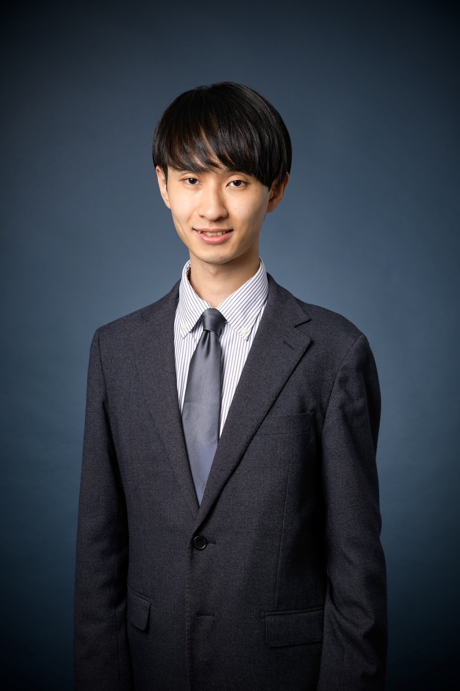
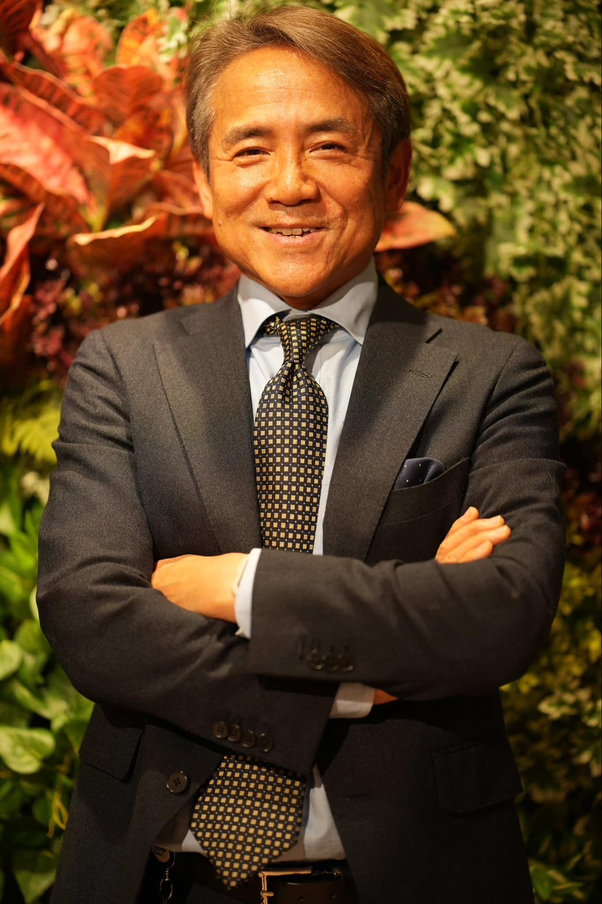

Your Gateway
to Global Tech Talent
Message
世界のトップIT人材を、あなたの会社で
停滞が続く日本企業と
インドの優秀な人材をダイレクトにつなぎ
現場起点の研究開発・DXを推進いたします
インドの優秀な人材をダイレクトにつなぎ
現場起点の研究開発・DXを推進いたします
日本国内では、次世代IT技術の開発が外資系ベンダーに依存しており、IT人材の多くもIT企業や外資系企業を志望する傾向が強いため、現場起点でのR&Dの推進が困難になっています。一方、インドのプネーでは再開発が進み、IT企業が集積しつつあり、大学では実務に即した教育や研究活動が活発に行われています。
こうした背景から、福吉通商株式会社IT人材部・淡路グローバルゲートウェイを2023年10月に設立し、R&Dや高度専門IT領域に特化した人材支援を開始しました。2024年3月には、インド・プネ市のIT系大学4校と業務提携（MOU）を締結。日本では確保が難しい高度スキル人材をリモート派遣し、ゆくゆくは社内人材として迎えることで、外部依存から脱却し、持続可能な内製体制の構築を目指します。
現地の新卒初任給は日本円で月8万円程度と低水準ですが、人材の流動性は高く、実際に弊社を通じて日系企業に就職した候補者が月30万円の初任給を得た例もあり、現地で大きな注目を集めています。継続した日印の架け橋と成るべくご支援させていただきます。

淡路グローバルゲートウェイ IT人材部
事業統括責任者 三谷 直矢 / Naoya Mitani
淡路グローバルゲートウェイ IT人材部
事業統括責任者 三谷 直矢 / Naoya Mitani
Support
AGG India マネジャー
Shreya Jaiswal
Shreya Jaiswal
10年以上の在日経験
神奈川県（横浜市）の日本法人での就業経験があり、日本とインドの両文化を深く理解
インドと日本の IT 及び教育業界で14 年以上の経験あり
エンジニア監理及びサポート（ 職務怠慢等の不正行為を管理）
＊サポート業務内容
インド人エンジニアの職場環境の整備とタスク管理
日本企業への順応を目的としたカリキュラムを実施
日本のビジネスマナー講習、企業様との中立的な立場での1on1面談
＊コミュニケーション言語
英語・日本語・その他3ヶ国語
＊学歴
University of Mumbai（MBA：2013 ~ 2015）
Savitribai Phule Pune University（ Computer Science ）
停滞が続く日本企業と
インドの優秀な人材をダイレクトにつなぎ
現場起点の研究開発・DXを推進いたします
インドの優秀な人材をダイレクトにつなぎ
現場起点の研究開発・DXを推進いたします
外資系保険会社のファイナンシャル部門にて会計実務及びERP導入プロジェクトを始め、テクノロジーを活用したバックオフィスの変革に従事
調達購買領域においても、組織・人・プロセス・プラットフォームの観点から変革をリードした経験を持つ
その後、大手コンサルティング会社を経て2022年大手エンタープライズソフトウェア会社に入社
金融サービス業界におけるインダストリアドバイザーとして、金融機関の業務変革を促すべく、SaaSソリューションの活用を推進
その後、独立し、AGGに参画 様々な分野にて社会の変革に繋がる活動を実施中
米国公認会計士・公認内部監査人
一般社団法人 日本CFO協会 主任研究委員
ソフィア経済人倶楽部 理事 産学共同教育委員長 上智大学 非常勤講師
特定非営利活動法人 クリエイティブ・シェアード・バリュー 理事

AGG シニアアドバイザー
日下部 淳 / Atsushi Kusakabe
AGG シニアアドバイザー
日下部 淳 / Atsushi Kusakabe